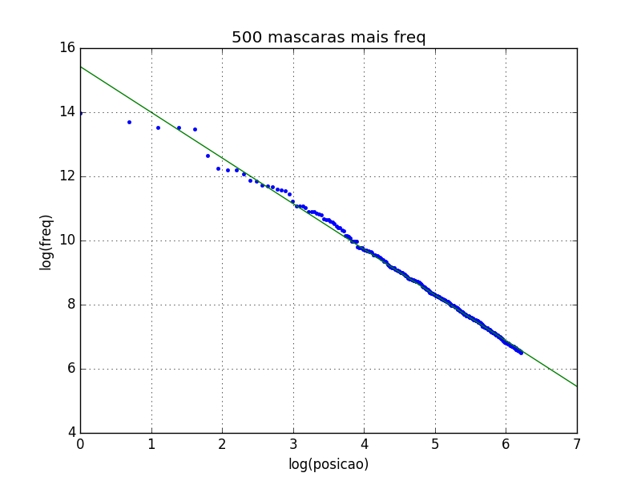
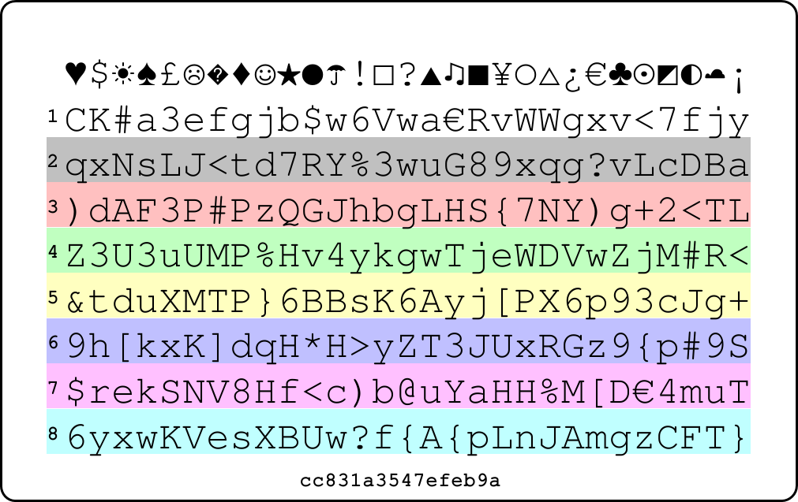
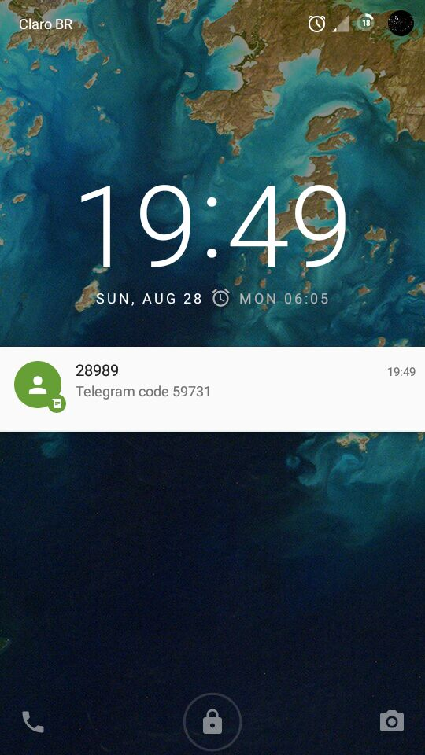
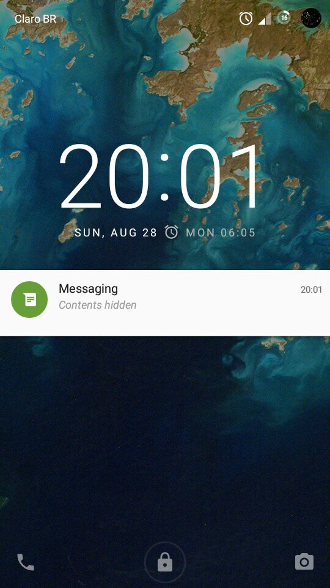
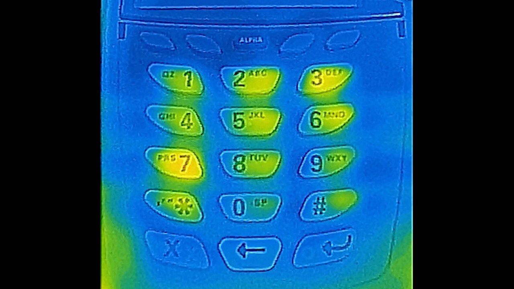

{kind=link}

Comecei a pesquisar e fazer a análise de senhas para um trabalho então resolvi escrever um texto sobre o assunto.
Rodrigo Tambellini (Harry) grande amigo, entramos juntos na faculdade e vivemos juntos muitas coisas. Sdds Harry
Não sou de fazer dedicatórias, mas como também não sou de escrever textos, esse texto é dedicado aos meus amigos que (coelhinhos voadores) sempre (coelhinhos voadores) me incentivaram em compartilhar essas paradas.
Neste texto vou falar vários aspectos de senhas porém como isso se reflete em mudança de hábitos é imprescindível dar um passo para trás e se esforçar em manter nossos dispositivos seguros, então vou destacar algumas dicas de como fazelo:
Windows 10: Desativar envio de seus dados: Destroy Windows 10 Spying
Além dessas dicas de segurança vou indicar algumas leituras complementares:
Vou usar esses termos durante o texto, então melhor já tirar isso da frente.
Def: uma função de hash é uma função que recebe em sua entrada mensagens de qualquer tamanho e as “resume” numa saída de tamanho fixo (normalmente a saída é representada em hexadecimal).
Boas funções de hash têm algumas propriedades, dentre elas vou destacar:
Alguns exemplos de funções de hash: MD5, SHA1, SHA2, blake2.
Exemplo:
md5('senha') = e8d95a51f3af4a3b134bf6bb680a213a
md5('senha1') = 92f20dafc5e5ac1c66820903c492cc04Repare no efeito avalanche: as duas mensagens são muito parecidas, porém seus hashes são muito diferentes.
(NUNCA use MD5 ou SHA1 ou somente o hash (sem salt) para armazenar senhas. Recomendo usar argon2 -- ganhadora da Password Hashing Competition)
Def: Dado um espaço amostral de eventos (S), uma distribuição de probabilidade é uma função P, P:S→[0,1], e a única restrição dessa função é que a soma de P aplicada em todos os eventos no espaço amostral vale 1 (caso discreto) e no caso continuo a integral sobre o domínio vale 1.
Imagine as potencias de 2: 2²=4 , 2³=8 etc ... sabemos por exemplo que 1024 é uma potencia de 2, mas é 2 elevado a quanto que temos 1024?
ou seja, queremos encontrar o valor de x na equação: 2x = 1024 , veremos que nesse caso x vale 10, mas como chegamos nessa resposta?
Sendo a e b reais positivos, com a ≠ 1, chama-se logaritmo de b na base a, o expoente que se deve dar à base a de modo que a potencia obtida seja igual a b.
Em símbolos: se a,b ∈ ℝ, 0 < a ≠ 1 e b > 0 , então:
logab = x ⇔ ax = b
Abaixo segue as principais propriedades do logaritmos
loga(b · c)=logab + logac
logabc = c · logab
loga(b/c)=logab − logac
logab = logcb/logca
Referencia: Essas definições e propriedades foram retiradas do excelente livro: Fundamentos da matemática elementar (FME):
IEZZI, Gelson; DOLCE, Osvaldo; MURAKAMI, Carlos. Fundamentos de Matemática Elementar, Volume 2, LOGARITMOS . São Paulo: Editora Atual, 9 a Edição, 2004
Quando escrevemos apenas log estamos nos referindo a logaritmo em qual base?
A verdade é que escrever apenas log é ambíguo, pode estar se referindo ao logaritmo na base 10 ou na base e (numero de Euler: 2.71...), uma boa regra de dedão é: Se o que você está lendo é uma livro de engenharia é log na base 10, se é um livro de matemática ou computação é na base e.
Porém a notação ln é sempre log na base e
Voltando ao exemplo do começo: queremos encontrar log21024 , algumas calculadoras tem a operação de log na base 2 (pois é muito utilizado na computação), porém podemos usar a propriedade de mudança de base e teremos:
log21024 = ln(1024)/ln(2)=6.9315/0.69315 = 10
Quando estamos lidando com quantidades que podem ser minusculas ou gigantescas , é difícil representar essas quantidades com seu valor absoluto , por exemplo: no nosso contexto de senhas: um PinCode de 4 dígitos teremos 104= 10 mil combinações agora uma senha com maiúsculas , minusculas , números e caracteres especiais de tamanho 9 tem 949= 572994802228616704 (572 quadrilhão) de combinações (spoiler alert: veremos logo a frente uma senha assim que é quebrada em segundos), ou seja como o número de combinações de uma senha cresce exponencialmente, essa quantidade vai ficando gigantesca e difícil de representar.
Se liga na propriedade do logaritmo da potencia: se temos uma senha com comprimento L e utilizando N símbolos , o numero de combinações vale NL, porém se aplicarmos log2 dessa quantidade teremos: log2(NL)=L · log2(N) ou seja agora essa quantidade cresce linearmente conforme aumenta o comprimento, tornando mais fácil sua representação.
Ou seja quando queremos medir a ordem de grandeza ou que a proporção é mais importante que o valor absoluto é conveniente utilizar uma escala logarítmica, alguns exemplos delas são: Richter (terremotos) , Decibel (som), oitavas (musica) e pH (química).
Uma ultima reflexão: como vistos na escala Decibel, nossos sentidos percebem as quantidades físicas de forma logarítmica (Lei de Weber-Fechner), então por que não utilizar mais o logaritmo no nosso cotidiano? Por que não ao invés de contar de maneira linear: 1,2,3,4,5,6 ... contarmos de maneira logarítmica: 1,3,9,27,81 ... nesse excelente video VSauce explora essa reflexão.
Def: Engenharia social é a manipulação psicológica de pessoas para que realizem ações ou revelem informações.
Exemplo: Um dos hackers mais famosos do mundo é o Kevin Mitnick, que escreveu um livro chamado A Arte de Enganar. Ele sempre pregou que a estupidez humana é a maior falha de qualquer sistema.
Certa vez, uma operadora de telefonia americana tinha uma promoção na qual, na compra de um celular, você ganhava um segundo aparelho por 1 centavo. O Mitnick ligou para a loja da operadora perguntando se tinham um determinado modelo de aparelho, há quanto tempo o funcionário trabalhava lá etc… Então, ele ligou em outra loja da operadora se identificando como o funcionário e dizendo que um cliente chamado Kevin Mitnick havia comprado um aparelho, mas que como não tinham um celular naquela loja, o cliente iria buscar na outra unidade. Ele chegou lá e pegou o aparelho de graça.
Repare que o Mitnick "hackeou" a operadora sem nem usar um computador, só persuadindo as pessoas.
Em junho de 2016, houve um vazamento de senhas do LinkedIn. O grupo resposável pelo vazamento obteve 61 milhões de hashes (SHA1) de senhas distintas e em apenas duas horas eles conseguiram quebrar 65% das senhas :O
Um dos afetados foi o Mark Zukerberg (CEO do Facebook) que teve sua senha vazada. Sua senha era “dadada” e ele usava essa mesma senha no LinkedIn, Twitter e Pinterest.
O que aprendemos com esse episódio? Precisamos falar sobre senhas!!! Nosso dia a dia está rodeado de senhas, porém nem sempre essas elas são seguras.
Às vezes utilizamos a mesma senha em vários sites, ou temos aquela senha que um/a ex ainda tem.
Para um trabalho, comecei a analisar um conjunto de dados com 10 milhões de senhas, em outros conjuntos de dados muito bons, porém acabei optando por esse por causa do Departamento Vai Dar Merda. O responsável por esse conjunto de dados, Mark Burnett, colocou apenas senhas mais antigas (de 5 a 10 anos atrás) e tomou vários cuidados pra evitar que as pessoas se prejudiquem.
Minha análise propõe estudar as seguintes características de interesse:
A análise das senhas foi feita conforme o esquema abaixo:
(conjunto de dados) → (tabela de frequências) → resultados da análiseO conjunto de dados é um arquivo de texto chamado : 10-million-combos.txt.
(PS: o arquivo está no “formato windows” (além do \n, tem um \r), porém preferi remover os \r, usando o tr.)
A tabela de frequências (tabFreq.txt) foi obtida com o seguinte comando:
awk '{print $2}' 10-million-combos.txt | sort | uniq -c | sort -nr > tabFreq.txtEsse awk vai imprimir somente a segunda coluna do arquivo (descartando os usernames), sort por sua vez coloca as senhas em ordem alfabética para que uniq -c conte as ocorrências das senhas e, por fim, sort -nr as ordena pelo número de ocorrências.
Vamos ao que interessa: são 5,1 milhões (5.189.333) de senhas únicas, que dão no total 9.997.922 senhas. Abaixo estão as 30 senhas mais frequentes, que juntas correspondem a 2,05% do total das senhas:
| Senha | %freq |
|---|---|
| 123456 | 0.56% |
| password | 0.20% |
| 12345678 | 0.14% |
| qwerty | 0.13% |
| 123456789 | 0.12% |
| 12345 | 0.11% |
| 1234 | 0.06% |
| 111111 | 0.06% |
| 1234567 | 0.05% |
| dragon | 0.04% |
| 123123 | 0.04% |
| baseball | 0.04% |
| abc123 | 0.04% |
| football | 0.03% |
| monkey | 0.03% |
| letmein | 0.03% |
| 696969 | 0.03% |
| shadow | 0.03% |
| master | 0.03% |
| 666666 | 0.03% |
| qwertyuiop | 0.03% |
| 123321 | 0.03% |
| mustang | 0.03% |
| 1234567890 | 0.03% |
| michael | 0.03% |
| 654321 | 0.03% |
| pussy | 0.03% |
| superman | 0.03% |
| 1qaz2wsx | 0.03% |
| 7777777 | 0.02% |
Abaixo os grupos:
| Grupos | % |
|---|---|
| l | 38.25% |
| l+d | 29.86% |
| d | 20.36% |
| u+l+d | 5.71% |
| u+l | 2.52% |
| u+d | 1.10% |
| u | 1.09% |
| l+s | 0.40% |
| l+d+s | 0.37% |
| u+l+d+s | 0.15% |
| d+s | 0.08% |
| u+l+s | 0.07% |
| u+d+s | 0.02% |
| u+s | 0.01% |
| s | 0.01% |
Abaixo os 11 tamanhos mais frequentes:
| tam | % |
|---|---|
| 8 | 29.81% |
| 6 | 25.45% |
| 7 | 16.63% |
| 9 | 6.81% |
| 5 | 4.95% |
| 10 | 4.71% |
| 4 | 3.45% |
| 11 | 2.64% |
| 12 | 1.91% |
| 13 | 1.36% |
| 14 | 0.77% |
Abaixo as 20 máscaras mais frequentes, que correspondem a 65% do total:
| máscara | % |
|---|---|
| llllll | 11.76% |
| llllllll | 8.98% |
| lllllll | 7.50% |
| dddddddd | 7.40% |
| dddddd | 7.03% |
| lllll | 3.15% |
| ddddddd | 2.09% |
| lllllldd | 2.00% |
| lllllllll | 1.97% |
| llll | 1.74% |
| dddd | 1.42% |
| llllllld | 1.38% |
| llllld | 1.25% |
| llllllllll | 1.21% |
| llllldd | 1.19% |
| lllldddd | 1.10% |
| lllllld | 1.07% |
| lllldd | 1.05% |
| lllllddd | 0.94% |
| ddddd | 0.74% |
Logo mais veremos que as senhas geradas por essas máscaras não são muito boas (pouca entropia). Por exemplo: a máscara mais frequente llllll (11%), tem apenas 28 bits ou seja em menos de 1s todas as senhas geradas por essa máscaras são quebradas.
Aviso: a secção abaixo VAI EXPLODIR SUA MENTE !!! Caso sua mente não exploda: VOCÊ NÃO TEM EMOÇÃO (continue com cuidado).
A lei de Zipf foi nomeada em homenagem ao linguista americano George Kingsley Zipf, que a popularizou.
A lei diz que se observamos o quão frequente uma palavra é em um livro (ou numa língua inteira), a k-sima palavra mais frequente vai aparecer proporcionalmente a 1/k.
Ou seja, a segunda palavra mais frequente vai ocorrer aproximadamente metade das vezes do que a primeira mais frequente; já a terceira palavra mais frequente, um terço da primeira mais frequente e assim por diante…
Apesar do Zipf ter começado suas observações na língua inglesa, isso acontece em todas as línguas, inclusive em línguas extintas que ainda nem conseguimos traduzir.
É surpreendente como coisa tão humana e criativa como a linguagem pode ser expressa de uma forma tão previsível.
Na real, a lei de Zipf é o caso discreto da distribuição (continua) de Pareto, na qual densidade vale:
onde o suporte é x ≥ b e a > 1;
Perceba que se aplicarmos log na distribuição teremos:
ou seja, o gráfico log-log da distribuição de Pareto é uma reta decrescente.
Dito isso, esse padrão não acontece apenas nas línguas, mas também descreve:
Como tantos processos da vida real se comportam segundo a distribuição de Pareto, a partir da distribuição surge o Princípio de Pareto, que diz que via de regra aproximadamente 20% das causas são responsáveis por 80% dos resultados.
Por exemplo:
Depois, o Zipf percebeu que esse padrão 80/20 era uma consequência do princípio do menor esforço. Os falantes de uma língua naturalmente preferem usar menos palavras possível para se expressar, resultando em menos trabalho.
Por fim, veja um video ótimo do VSauce sobre Zipf.
Lembrando que o gráfico log-log da distribuição de Pareto é uma reta descreste, assim temos os gráficos:


O Princípio de Pareto (20% das causas são responsáveis por 80% dos resultados) também ocorre em:
O Richard Fyanman foi um físico americano, seu trabalho era em mecânica quântica e física de partículas . Ele que inventou os diagramas de Faynman . Em 1965 ele ganhou o nobel de física.
Em sua auto biografia O senhor está brincando, Sr. Faynman! ele conta quando trabalhava no projeto Manhattan:
Afim de mostrar o quão insegura era a guarda de documentos secretos de fabricação de bombas atômicas ele gostava de abrir fechaduras e cofres.
Os cofres eram compostos de um disco rotatório com 100 marcações e o segredo do cofre são 3 números, ou seja existem 1 milhão de combinações, demora uns 5 segundos por tentativa assim demoraria aproximadamente 60 dias para tentar todas as combinações, porém Faynman os abria em 1.5 minutos.
Ele tinha um cofre e percebeu que como os cofres são objetos mecânicos eles apresentavam uma tolerância mecânica de ± 2 , assim ele não precisava tentar as 100 combinações , mas apenas 20 ( 2 , 7 ,12 , 17 ... , 87, 92 , 97 ) , assim as 1 milhão de combinações caem para apenas 8 mil demorando 10 horas.
Muitas pessoas usavam uma data (DDMMAA) ou seja 30 , 12 e 45 combinações e considerando a tolerancia mecanica isso dá 162 combinações ou seja 18 minutos.
Muitos usavam como senha as constantes pi e e ou seja 3.14159... → 31-41-59 , 2.71828... → 27-18-28.
Muitos não mudaram a senha padrão: 25-0-25 ou 50-25-50.
Enquanto conversa com seus colegas e seu cofre estava aberto, girando o disco ele ouvia 2 clicks, descobrindo os 2 ultimos numeros , assim ele tinha que testar 20 combinações, demorando 1.5 minutos.
Em suma, Feynman tinha a reputação de abridor de cofres, pois:
No caso do Feynman, ele precisava que o cofre estivesse aberto para que ele descobrisse os 2 últimos números, será que isso não é uma grande limitação? E ele fez isso durante a década de 40, será que os cofres atuais não são melhores? Saiu em jul2017 na wired uma matéria contando a historia de um engenheiro que construiu um robô para ficar tentando as combinações para abrir o cofre, como Feynman ele também descobriu alguns "atalhos" para diminuir o número de combinações, o robô demorou 15 minutos para descobrir a combinação do cofre, confira a matéria: watch a homemade robot crack a safe in just 15 minutes
Intuitivamente pensamos que senha boa é uma senha toda complicada e difícil de lembrar, por exemplo “S&nh5F0d@”. Ela tem 9 caracteres, maiúsculas, minúsculas, números e caracteres especiais — então ela deve ser boa. Porém, conforme veremos logo mais, essa senha é quebrada em segundos.
Pense em um número entre 1 e 20. Você pensou em 17, 7 ou 13? Esse post mostrou que 17 é o mais escolhido pelas pessoas, e que elas tendem a escolher números primos.
Outro exemplo é a falácia do apostador: um apostador deve apostar se uma bolinha vai cair no preto ou vermelho, depois dela ter caído, por exemplo, 4 vezes seguidas no vermelho. O apostador pensa que é mais “provável” que agora ela “deve” cair na preta. Porém, a bolinha tem 50%-50% de cair no preto e vermelho, INDEPENDENTEMENTE DO RESULTADOS ANTERIORES.
Para fechar: escreva em um papel como você acha que será o resultado do lançamento de uma moeda 30 vezes e compare jogando de fato a moeda.
As pessoas favorecem certas sequencias, por exemplo: tendem a evitar que caia o resultado anterior repetidas vezes: dificilmente você achará que a moeda cai cara 4 vezes seguidas.
Veja esse vídeo da Khan Academy, que mostra uma visualização dessa propriedade de estabilidade de frequência.
(Quer mais um exemplo? Veja esse excelente video do Isto é Matemática, falando do problema de Monty Hall.)
Ou seja: as pessoas têm uma intuição deturpada de um resultado aleatório. Esse comportamento de manada acaba produzindo senhas mais previsíveis.
Oraculo de teclado: Quer testar o quão previsível você é? entre nesse link e vá digitando d e f e a pagina vai mostrar com que precisão ele conseguiu prever.
Então, como avaliar se uma senha é de fato boa? Precisamos introduzir um conceito da teoria da informação, que é o conceito de entropia de Shannon: a entropia é a “media” de informação que aquela senha contém.
A entropia H, medida em bits, de uma senha com comprimento L, utilizando N símbolos é definida como log na base 2 de todas as combinações que a senha pode ter, ou seja:
H = log2(NL)=L ⋅ log2(N)
Agora que sabemos como calcular a entropia, podemos calcular a tabela abaixo:
| Grupo | Num símbolos (N) | entropia/simbolo (H) |
|---|---|---|
| números | 10 | 3.32 |
| letras | 26 | 4.7 |
| base64 | 64 | 6 |
| “tudo”¹ | 94 | 6.5 |
| palavra² | 7776 | 12.92 |
¹: tudo = maiúsculas (26) + minúsculas (26) + números (10) + caracteres especiais (32) = 94 símbolos.
²: na próxima seção veremos por que uma palavra (diceware) tem essa entropia.
Ou seja, de acordo com a tabela, uma senha verdadeiramente aleatória com 8 caracteres usando “tudo” tem 6,5 * 8 = 52 bits de entropia.
Dito isso, não existe uma maneira melhor de começar a falar de senhas boas do que a tirinha do xkcd:

creditos : xkcd, tradução: Oficina AntiVigilancia
Qual a lição dessa tirinha? Essas senhas todas complicadas e super difíceis de lembrar na verdade têm uma entropia bastante baixa, porque na realidade são baseadas em apenas uma palavra comum sobre a qual, basicamente, são feitas somente algumas substituições comuns (tipo o → 0), alguns maiúsculas e um número. Ou seja, apesar dessas senhas serem difíceis e complicadas para pessoas, para computadores elas são super fáceis de serem quebradas.
Agora fica a pergunta: quanta entropia minha senha deve ter?
No documentário Citizenfour o Snowden fala:
Assume your adversary is capable of one trillion guesses per second.
Assim, vamos presumir 1 trilhão de tentativas por segundos (que é um valor bastante razoável).
O tempo para quebrar uma senha (T) é o número de combinações que aquela senha pode ter, dividido pelo número de tentativas por segundo (P) ou seja: T = 2^(entropia) / P.
Portanto, vamos calcular a tabela abaixo (considerando P = 1 trilhão/s) e o tamanho necessário da senha:
| Entropia | Tempo para quebrar | base64 | “tudo” | N. de palavras |
|---|---|---|---|---|
| 40 | 1.1 segundo | 7 | 7 | 3 |
| 50 | 19 minutos | 9 | 8 | 4 |
| 60 | 13 dias | 10 | 10 | 5 |
| 65 | 1.1 anos | 11 | 10 | 6 |
| 70 | 37 anos | 12 | 11 | 6 |
| 80 | 38 milênios | 14 | 13 | 6 |
| 100 | 40 bilhões de anos | 17 | 16 | 8 |
(Observação importante: esse tempo é o tempo GARANTIDO de quebrar a senha. Ou seja, é o tempo que demora para percorrer TODAS as possibilidades. O tempo real para quebrar a senha pode ser menor.)
Vendo a tabela podemos estabelecer que uma boa senha deve ter 80 bits (ou seja 13 caracteres usando “tudo”), dependendo de onde você vai usar essa senha.
Quero saber se minha senha é boa: você pode olhar a primeira tabela e calcular manualmente a entropia dela, mas sugiro que use esse medidor de senha chamado Rumkin ou a lib zxcvbn que você pode usar aqui.
(Observação: esses dois medidores de senhas avaliam sua senha localmente no seu navegador, nunca enviando a senha para a internet. Você pode digitar sua senha neles sem medo.)
Voltando pro exemplo do começo: a senha “S&nh5F0d@” é baseada em 2 palavras comuns e somente feita algumas substituições comuns e etc…
Segundo o Rumkin, ela tem 40,7 bits de entropia, que segundo a nossa tabela é quebrada em questão de segundos (o zxcvbn também mostrou isso).
Em suma, o diceware é um método de gerar senhas que é:
Preciso criar uma senha que seja fácil de lembrar e que tenha bastante entropia. Aí entra o método diceware (em português dadoware)
Diceware é um método no qual, através de um dado, uma lista de palavras, papel e lápis podemos construir senhas mais seguras.
Consulte o livreto da ThoughtWorks para pegar a lista de palavras.
O método foi inventado por Arnold G. Reinhold, ele mantém o site oficial do diceware.
O método consiste em usar o dado para sortear palavras da lista. Jogue o dado 5 vezes por palavra. Os dois primeiros números são as paginas do livreto e os três últimos, a palavra.
Por exemplo: você tirou no dado: 2-6-5-1-3 : vá na pagina 2,6 do livreto e procure a palavra 513 = egípcio.
Quantas palavras usar? Como para cada palavra jogamos o dado 5 vezes, a lista de palavras tem 6^5 = 7776 palavras e conforme calculamos isso resulta em 12,92 bits de entropia por palavra sorteada, então é indicado usar 6 palavras.
Para gerar senhas ainda mais seguras, usando o diceware, podemos:
Preciso usar um dado de verdade para gerar as senhas? Essa é uma longa discussão, mas resumidamente: usando um dado você terá uma boa garantia que nada dará errado, porém gerar os números aleatórios usando um computador normalmente é bom o suficiente.
Dito isso, fiz esse código em Python para gerar uma senha (ele também gera números e caracteres especiais), a principal função dele é:
from random import SystemRandom as cryptogen
def GenDiceware(filename, n=6):
with open(filename) as f:
words = [line.strip() for line in f]
return [cryptogen().choice(words) for _ in range(n)]Observação 1: além da lista de palavras do livreto, você pode usar um pacote chamado wbrazilian link (270 mil palavras = 18 bits de entropia / palavra).
Observação 2: O que você DEVE atentar nesse código é o uso da classe SystemRandom, que utiliza um gerador de número pseudo-aleatório CRIPTOGRAFICAMENTE SEGURO, conforme a documentação:
Init signature: random.SystemRandom(self, x=None)
Source:
class SystemRandom(Random):
"""Alternate random number generator using sources provided
by the operating system (such as /dev/urandom on Unix or
CryptGenRandom on Windows).
Not available on all systems (see os.urandom() for details).
"""e a documentação de os.urandom:
urandom(n) → str
Return n random bytes suitable for cryptographic use.Exemplo de senha gerada: evocar encher acerto 833?LANCHE# azul >Caloria<
Ela tem 47 caracteres e segundo o Rumkin ela tem 240 bits de entropia, ou seja uma senha bastante forte e fácil de lembrar \o/
Agora que sabemos como avaliar se uma senha é boa e como gerar boas senhas, ainda precisamos resolver o seguinte problema: precisamos ter uma senha para cada serviço, para o caso de que um serviço seja comprometido ou não implemente de maneira correta o armazenamento das senhas de seus clientes etc…
Uma solução para isso é um password manager (gerenciador de senhas), é um programa que cria boas senhas aleatórias automaticamente, para cada site individualmente, guardando todas essas senhas trancadas com apenas uma senha mestra.
Vou recomendar alguns gerenciadores de senhas:
Minha recomendação padrão, ele é software livre, está disponível nas principais distros GNU/Linux e existe pra Android: o KeePassDroid (na F-Droid) e tem auto-type.

O uso dele é: você cria seu banco de senhas (.kdb ou .kdbx), cadastra as entradas de seus serviços e, então, o programa gera uma senha aleatória, como por exemplo: )U$*%0jqvm,s*&TbZJ$DiFq[&$GlQ?
Quando você precisar acessar uma senha, você abre o arquivo, ele vai pedir sua senha mestra e então selecione a entrada que você precisa.
Você terá duas opções: dar um control-C (com a entrada selecionada) e control-V no campo de senha (ele limpa automaticamente a senha do seu control-c); ou você pode usar o auto-type: vá em Extras → Configurações → Avançado → e configure um atalho pro auto-type, por fim vá no campo de usuário e digite o atalho então ele vai digitar seu usuário e senha sozinho.
Dica: afim de melhorar ainda mais a segurança do KeePass, vá em configurações do database e clique no reloginho que aparece, Com isso, quando você abrir o KeePassX, ele vai demorar um pouco mais (tipo 1s no total), mas fica mais difícil de quebrar sua senha mestra pois cada tentativa demorará 1s (em computadores tão rápidos quanto o seu).
Como sincronizar minhas senhas com meu celular: Recomendo o software livre Syncthing é um app para Android e um programa pra pc, no qual ele sincroniza pastas entre seus dispositivos, criando assim sua nuvem pessoal e descentralizada.
Minha segunda recomendação é um gerenciador de senhas pensado com a filosofia Unix. Ele é software livre, está disponível nas principais distros GNU/Linux, e também para Android: o Password Store (na F-Droid).
Ele funciona no terminal, conforme abaixo:
zx2c4@laptop ~ $ pass
Password Store
├── Business
│ ├── some-silly-business-site.com
│ └── another-business-site.net
├── Email
│ ├── donenfeld.com
│ └── zx2c4.com
└── France
├── bank
├── freebox
└── mobilephoneO diferencial dele é que ele criptografa suas senhas com PGP e suporta git, então você pode compartilhar senhas com outras pessoas -- basta criptografar as senhas com sua chave e a chave da outra pessoa e, então, sincronizar usando o git.
Outro password manager, o diferencial dele é: ao contrario dos anteriores, ele não precisa ser instalado em seu computador e não tem um arquivo com suas senhas.
Basta entrar no site, colocar a senha mestra, e ele gera a senha daquele site, conforme abaixo:
Pra minha última recomendação, apresento o PasswordCard. Ele é um password manager físico. Entre no site e gere um cartão novo, conforme o abaixo:

O cartão é uma “tabela” com algumas linhas com letras, números e caracteres especiais aleatórios. Para gerar uma senha, você escolhe onde a sua senha começa e qual a direção da senha -- com o cuidado de não colocar seu dedo enquanto lê a senha.
A ideia por trás da autenticação em duas etapas (2FA -- 2 factor authentication) é que para entrar na sua conta além da senha (que uma coisa que só você sabe), precisa de uma coisa que só você tem, no caso um app no celular.
Como usar: cada serviço é diferente, veja aqui turnon2fa como habilitar no serviço especifico. Normalmente, você escaneia um QR code com um app. Recomendo o freeotp (é software livre, tem na F-Droid e pra iOS).
Uma alternativa legal ao FreeOTP é o andOTP o diferencial dele é que ele permite realizar backup.
Quando você for entrar na sua conta, após colocar a senha, deverá colocar um número gerado pelo app. Cada número só dura 30s, então não tem problema se alguém ver o código num determinado momento, conforme mostrado abaixo:

Caso você não esteja convencido que precisa disso: veja essa reportagem que foi capa da Wired em Dez2012: Kill the Password: A String of Characters Won't Protect You.
Resumidamente: por meio de engenharia social, descobriram algumas informações pessoais dele, ligaram no suporte da Apple, falando que ele tinha esquecido a senha dele e com as informações dele conseguiram responder as perguntas de segurança. Assim, pegaram a senha do iCloud dele, entraram no Find My mac e mandaram deletar remotamente os dispositivos dele.
Ou seja, muito embora o Mat Honan usasse senhas robustas, conseguiram “pegar tudo” dele.
Curiosidade: existe uma empresa chamada KeyTrac, que desenvolveu uma sistema de biometria usando o teclado: baseado na velocidade na qual você digita e nos tempos entre o apertar das teclas, ele pode identificar por exemplo se alguém está acessando indevidamente a sua conta. Experimente aqui.
Por um lado, isso pode evitar acessos indevidos a sua conta. Por outro, isso pode ser usado para te identificar e rastrear na internet.
Também foi desenvolvido um projeto chamado kloak que ofusca suas digitações.
Alguns serviços, como o Twitter, oferecem autenticação em duas etapas usando um SMS, ao invés de um app. Isso é um problema, pois SMSes e ligações telefônicas podem ser facilmente interceptadas por meio de IMSI Catchers, que são torres de celular falsas que fazem um ataque do tipo homem-no-meio.
Veja um artigo da oficina anti-vigilância explicando como detectar e se prevenir contra esses ataques: Detectando antenas de celular espiãs.
Além disso, mesmo quando o celular está bloqueado, a notificação mostra a mensagem na tela de bloqueio, por exemplo:

Você pode resolver isso:
Resultado final:

Para concluir o texto, vou falar de algumas boas praticas para senhas:
É uma boa pratica, pois toda vez que você troca sua senha, normalmente automaticamente sua conta é deslogada de outros computadores que você deixou sua conta logada.
Outro motivo para mudar suas senhas com frequência: às vezes você contou sua senha, digamos do Netflix, e não se lembra que outras pessoas podem estar usando sua conta.
Parece óbvio, pois se você usa informações pessoais em suas senhas, é possível descobrir sua senha através de engenharia social.
O Troy Hunt mantêm um site ótimo, chamado haveibeenpwned no qual ele publica quando um serviço tem suas senhas vazadas. Ele publicou um post: The science of password selection no qual ele analisou algumas senhas vazadas. No artigo, Troy mostra que pessoas têm suas senhas baseada apenas no nome, por exemplo: Email: murphy666@… Password: murphy666.
Em excelente seu post (PIN analysis), Nick Berry analisou 3.4 milhões de PinCodes de 4 dígitos (10 mil combinações). E constatou:
Se você usa o padrão do Android (aquela gradezinha 3x3): existem 389112 possibilidades que podem ser usadas (ou seja usar um PinCode VERDADEIRAMENTE ALEATÓRIO de 6 dígitos é um pouco melhor )
uma pesquisadora norueguesa chamada Marte Løge em sua tese de mestrado mostrou que mais de 10% dos padrões analisados, usa como padrão de desbloqueio uma "letra" que é a inicial do companheiro, filho, ou algo parecido.
veja o artigo na arstechnica falando sobre o assunto: New data uncovers the surprising predictability of Android lock patterns
Nesse video : iPhone ATM PIN code hack- HOW TO PREVENT ele mostra um "case" para iPhone que é uma câmera térmica e através do calor dos dedos é possível descobrir o pincode digitado, conforme a foto abaixo:

note que as teclas que estão com uma coloração mais clara estão mais quentes, ou seja foram digitadas por ultimo: ou seja o pincode digitado foi 12345.
para prevenir desse ataque ele sugere que enquanto digita o pincode mantenha os dedos sobre todas as outras teclas, assim todas as teclas ficaram com uma coloração mais clara.
resultado:

Nesse paper: Stealing PINs via Mobile Sensors: Actual Risk versus User Perception os pesquisadores conseguiram descobrir 80% dos pincodes digitados no celular através de um script no navegador que monitora o movimento através do acelerômetro.
Recomendação: Use uma senha forte pra criptografia de disco e um PinCode de (pelo menos) 6 dígitos pra desbloquear o celular. Tem um App chamado SnooperStopper (FDroid) ele depois de 3 tentativas erradas na tela de desbloqueio o celular reinicia , pedindo a senha forte.